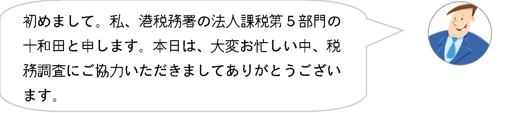
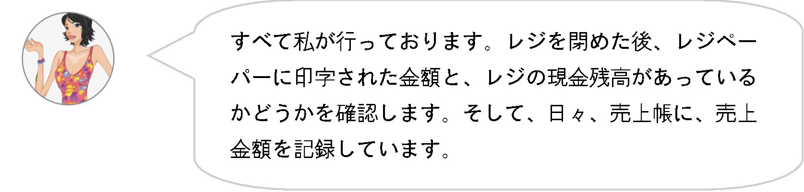
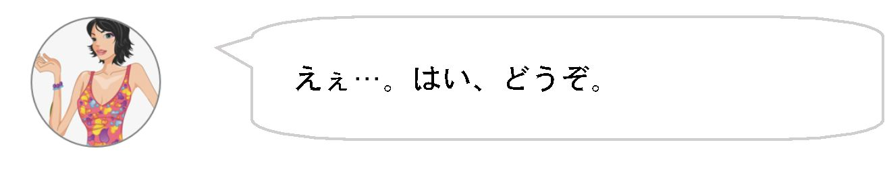

| 「税務調査」が10分で分かる本 | |
| ラッキー ピエール | |
| (2019) | |
目次
１ はじめに
２ 税務調査とは
３ 税務調査の流れ
４ 税務調査を受けるにあたって
５ 税務調査の具体例
６ おわりに
１ はじめに
「架空外注費を計上して約9,000万円を脱税したとして、T国税局が法人税法違反と消費税法違反の疑いで、東京・渋谷区の健康食品販売会社「株式会社XXX」と脱税太郎社長（42）を東京地検に告発したことが、関係者への取材で分かった。
関係者によると、脱税社長は架空の外注費を計上する手口で、20XX年３月期までの２年間で法人所得約２億800万円を隠して約5,100万円を脱税したほか、消費税約3,800万円を免れた疑いがある。不正に得た資金は株式投資や自宅マンションの購入資金に充てたという。」
このような脱税に関するニュースを見たことのある方は、多いだろう。
しかし、このようなニュースを耳にしても、脱税金額が多すぎて、「あぁ、自分には関係がないけど、悪いことをしている人はいるんだなぁ。」とか、「何でバレたんだろう？」とか思っているのではないだろうか。
税務調査は、国税局や税務署、いわゆる国税当局によって行われるものであるが、世間一般の人たちは、国税当局による税務調査というものがどういうもので、どのように行われるのかを知らないだろう。
そこで、税務調査について、少しでも一般の方々に知ってもらうために、本書を書き上げた。本のタイトルの通り、10分で読み終えられるよう、難しい法令の規定等を、敢えて、非常に簡略化して書き上げたつもりである。
したがって、税務のプロである税理士や税法の研究者の方々等にとっては、物足りないと思われると思うが、そこはご容赦願いたい。あくまでも、筆者が本書を購読して欲しいと考えているのは、税の初心者が対象であるからだ。
税金に興味がある方、起業したての方、税務調査が入ることが決まった経営者の方々、いろんな人に、税務調査のイロハを知ってもらえれば幸いである。
２ 税務調査とは
そもそも、 税務調査 とは何だろうか。
税務調査とは平たく言えば、国税職員が、個人や法人が、収入や経費、利益等の額を正しく計算し、納めるべき税金を納めているかどうかを確認するために、自宅や事務所等にやってくることをいう。
国税職員が税務調査を行う権限については、国税通則法という法律に規定されている。国税職員は、所得税や法人税等について、必要があるときは、調査対象者に 質問 し、その者の事業に関する帳簿書類その他の物件を 検査 し、又は当該物件の 提示 若しくは 提出 を求めることができる。これは、国税職員の 質問調査権 というもので、適正公平な課税の確保の観点から、国税職員が、納税義務者等に対して質問し、帳簿書類その他の物件を検査し、又は当該物件の提示若しくは提出を求めることができる権限をいう。
なお、原則として税務調査を拒否することはできず、調査対象者には、税務調査を受任する義務があると解されている。
３ 税務調査の流れ
それでは、税務調査はどのような流れで行われるのだろうか。それについては、以下のとおりである（ただし、法令に基づく無予告の税務調査、国税犯則取締法に基づく強制調査を除く）。
（１）税務調査の事前通知
税務調査は、原則として、事前に調査内容等の通知が行われるこれは、国税通則法に基づく「事前通知」といわれる。
すなわち、税務調査の日時、税目、調査の目的、調査対象の期間などが事前に電話等で調査対象者に伝達される。国税職員は、この通知どおりの日時に自宅や事務所にやってきて、帳簿や請求書、領収書等を確認し、売上の計算や、経費関係に誤りがないかを確認することとなる。
（２）現場での調査
国税職員は、基本的には、調査対象者が、売上を少なく計上したり、仕入れや経費等を多く計上することで利益を少なくし、結果として税金を安くしている可能性を考慮して税務調査を行う。すなわち、売上の計上が漏れていたり、経費が過大に計上されていたりした場合には、結果として利益の額が小さくなるので、納める税金が少なくなるので、国税職員からは、修正申告をするよう求められることになる。
なお、追加で税金を支払うことになる場合もある反面、経理誤りにより税金を払い過ぎていたということで、税金の還付になる場合もあるので、悪いことばかりではない。
（３）金融機関調査及び反面調査
調査の過程において、国税職員が不審に思う点があれば、法令に基づき金融機関調査や反面調査を行うことになる。
ここで、 金融機関調査 とは、国税職員が法令に基づき、銀行や信用金庫等の金融機関に照会をかけ、法人や社長等名義の口座内容をそのまま復元して、売上とすべき収入が隠し口座等に振り込まれていないかなどを確認することをいい、 反面調査 とは、国税職員が調査対象者の取引先に行き、取引内容等が正しいかどうかを確認する手続きをいう。
例えば、調査対象者が外注費として100万円の支払いを行ったとして経理している場合、取引先との間に、本当にこの取引が存在するのか、金額は正しいのかなどを確認するために反面調査を行う。仮に、これが架空の外注費であれば、100万円だけ利益の額が小さくなっているので、結果として納めた税金の額が少なかったということになる。いわゆる脱税行為である。この場合、後ほど触れるが、ペナルティとして重加算税が課されることとなる。
（４）調査の終了
調査が終了したら、国税職員から、調査が終了したとの連絡がくる。経理誤り等があり、追加で税金を納める必要がある場合には追加で税金を納付し、逆に税金が還付になるようであれば、税金が返ってくる。
（５）過少申告加算税、重加算税、延滞税等
ここで注意してほしいのは、追加で税金を納付することになった場合、 加算税 及び 延滞税 というペナルティ的な税金を支払う必要がある点である。これは、課税の公平性の観点から法定されているものである。
単なる経理ミス等により、追加で税金を納めるような場合には、 過少申告加算税 がかかることになる。過少申告加算税の額は、追加で支払うべき税額の10％である（行政罰の性格を有する）。
例えば、追加で納付する税金が100万円であった場合、この100万円に10％を乗じた10万円が納付すべき過少申告加算税の額ということになる。
また、延滞税も、追加で支払うべき税金に数％程度課せられる（利息のような性格を有する）。ただし、金額によってはかからない場合もある（少額の場合）。
さらに、 重加算税 というものもある。これは、架空取引や売上を意図的に隠す等、仮装（隠蔽）を伴うような悪質な場合に課されるもので、追加で支払うべき税金の35％が課せられることになる。
例えば、追加で納付する税金が100万円であった場合、この100万円に35％を乗じた35万円が納付すべき、重加算税の額ということになる。
４ 税務調査を受けるにあたって
（１）身辺整理
税務調査では、自宅や事務所の中を色々と見られる場合がある。例えば、金庫や通帳等を入れている棚やカバン、引き出しなどだ。国税職員に見られても「ヤマシイ」ものが無かったとしても、国税職員はいろいろと勘繰るものである。したがって、見られて面倒なもの（例えば事業に関係のないもの等）は、事前に整理しておいたほうがいいだろう。
（２）恐れる必要はない
特に「ヤマシイ」ことがない場合には、神経質になる必要はない。ドンと構えて税務調査を受けるといい。むしろ、税務上の取り扱いについて指摘を受けることは、調査対象者にとっても勉強になることもある。
仮に「ヤマシイ」ことがある場合には、国税職員から指摘を受けた際に、アッサリと不正を認めてしまう方がいいだろう。下手に嘘をついたり傲慢な態度を取ったりすれば、国税職員も人間である。調査対象者に嫌がらせをすることが考えられる。しかも合法的にである。
例えば、調査対象者の事業活動の中で、最も大切な取引先に反面調査に行かれ、取引先の社長に、根掘り葉掘り質問攻めをされたり（取引先はいい気分は当然しないはずだ）、場合によっては、聴取書に署名押印をさせられるなど、心理的・物理的圧力を掛けられる場合がある。
調査対象者が意固地になることで取引先に迷惑をかけ、最悪の場合、取引を切られてしまう場合もある。したがって、自分が悪いことをした場合には素直に事実関係を認め、周りに迷惑をかけずに穏便に、追加で税金を支払って終わりにした方が得策だ。
もちろん、不正など行っておらず、また、税務上の取扱いに不満がある場合には、きちんと主張することも大事である。
５ 税務調査の具体例
（１）会社の概要
株式会社LuckyABC（以下、「ABC」という。）は、ケーキの製造と販売を行う会社である。ABCは、〇×駅の駅ビルにカフェ店舗を構えている。店舗の外観は、非常におしゃれであり、ABC一押しの「フルーツロールケーキ」が、有名雑誌にも取り上げられたこともあり、お客が引っ切りなしにやってくる繁盛店である。社長の長谷川あゆみ（以下、「長谷川」という。）は、ケーキの本場フランスで修業した経験もあり、ケーキ作りには造詣が深い。長谷川の噂を聞きつけたパティシエが、北は北海道から、南は沖縄まで、日本全国からやってきて、長谷川に指導を仰いでいた。
（２）税務調査の連絡
長谷川は、売上の急増に伴い、忙しい毎日を過ごしていた。そんなある日、事務所の電話が鳴った。税務署からの電話だった。
え？税務調査？？
長谷川は、「ドキッ」とした。なに？何？何？
突然の電話に戸惑っていたその時、十和田から、法令に基づく事前通知を行う旨の話があった。
それ以降の話は、覚えていない。頭が真っ白になってしまっていたからだ。確か、調査の目的とか、そんな話をしていた気がする。でも、詳しく思い出せない。
電話を切った後、長谷川は戸惑っていた。実は、「ヤマシイ」ことがあったからだ。
それは、数年前に遡る。ABCの「フルーツロールケーキ」が雑誌に取り上げられて以降、売上が急激に伸びたことから、納める法人税の金額を仮計算してみたところ、法人税額がなんと1,500万円近くになることが判明した。
長谷川は思った。「今まで必死に努力してきて、やっと花開いた事業なのよ。なのに、なのに、何でこんなに税金を払わないといけないの」。
悩んでいた長谷川は、知り合いの社長仲間に相談することにした。すると、その社長から、驚くべき言葉が返ってきた。
なるほど、と長谷川は思った。
売上げをごまかせば、税金が減ることになるんだ。長谷川は、さっそく、入れ知恵されたその方法を試してみることにした。
具体的には、お客から受け取った売上代金の一部を抜いて、売上を少なく計上した。そうすると、なんと、法人税額を０円とする法人税申告書が作成できた。
長谷川の顔には笑みが浮かんでいた。やった！これで税金を払わずに済む♪
...っていうか、そもそも、何で税金なんか払わないといけないわけ？どうせ、税金なんて、政治家に無駄に使われちゃって、自分には何の得もないんだから！！
（３）いよいよ税務調査がスタート
「ピンポーン！！」3月X日の午前10時、事務所のベルが鳴った。
十和田調査官は、時間ぴったりに事務所にやってきた。

長谷川は、調査官と名刺を交換し合い、応接室に案内した。
長谷川は作り笑いを浮かべたが、内心ドキドキしていた。バレたらどうしよう...。っていうか、もうすでにバレているのかも・・・。調査官は何も言ってないけど、実は、何かを知っていて、来たのではないのだろうか。長谷川は、不安でいっぱいだった。


長谷川は、手に汗をかいた。「...しまった。」と思っていた。とっさに嘘をついたが、十和田に勘づかれてはいないか。いや、十和田は表情一つ変えていなかったから、大丈夫だろう。長谷川は、自分自身に言い聞かせていた。

長谷川は、心臓がバクバクとなっているのが聞こえるようであった。表情は冷静を装っているが、今にも逃げ出したかった。
長谷川は、ホッとしていた。
よくもまぁ、こんな嘘やデマカセが、次から次へと出てくるなぁ、と自分でも感心していた。この調子なら、このポンコツ調査官を騙すことなんて簡単だな。
（４）いよいよクライマックスへ
調査官の顔が豹変した。穏やかな表情が一転。今にも飛び出してきそうなギラギラとした目玉と、腹の底から出したであろう、力強い言葉に長谷川社長はうろたえた。
長谷川は、動揺を隠すため、敢えて強い態度に出た。そうしないと、十和田に嘘がばれてしまうと感じたからだ。
長谷川は、自分で、血の気が引いていくのが分かった。まさか、こんなことでバレてしまうとは...。自分では、上手に細工をしていたつもりだった。なんで、なんで・・・・・。
長谷川は、気が動転して言葉が出てこない。そんな長谷川の目をじっと認めながら、十和田は続けた。
十和田は、動揺する長谷川の目を睨みつけながら続けた。
長谷川は観念した。もはや、逃げとおせるとは思わなかった。早く全てを話して、楽になりたいと思った。

長谷川は、十和田に全てを話した。売上を抜いて利益を圧縮し、税金をごまかしていたこと。嘘をついていたこと。そして、仕入れの水増しもしていたことも。
結果として、ABCには、本来、支払うべきであった法人税額1,500万円に加え、ペナルティとして重加算税が525万円課されることとなった。
６ おわりに
いかがだろうか。簡単ではあるが、税務調査のイロハについては理解していただけたと思う。何も悪いことをしていないのであれば、恐れる必要は何もない。不正を働かない善良な納税者に対しては、国税職員は非常に親切丁寧である。しかし、悪質な納税者には非常に厳しく、怖い存在であることを、理解しておく必要がある。
上述した税務調査の具体例の中で、長谷川社長は「税金なんて、１円だって払いたくない」と述べていた。確かに、それが正直なところだろう。誰しも、税金を積極的に払いたいなどとは思わないものだ。しかし、筆者から、一つ助言をしたいことがある。筆者は、数多くの会社の経営者を見てきたが、会社を自分の財布代わりのように考えている会社や、少しでも税金を安くしようとして売り上げをごまかしたり、原価や経費を水増ししたりしている会社、税金を安くするために、親族を役員として迎え入れ、役員報酬を支払うことで所得を圧縮したりしている会社（実質、親族への仕送り）は、ほぼ10年以内に倒産か休業に追い込まれる。何より、上場するような会社は、税金を安くして私腹を肥やすことを考えるよりも、上場することで莫大な創業者利益を得ようとするものだ。そのため、できるだけ利益をあげて内部留保を厚くし、また、内部留保を資本金に振り替えるなどして会社を、売り上げの面でも、資本の面でもどんどん大きくしようとする。
結局、まじめに税金を支払った方が、最終的には大きな果実を手に入れることはできるということを、有能な経営者は知っているのだ。
最後に、1949年（昭和24年）6月10日に、東京・工業クラブで開催された「国税庁開庁式」において、ハロルド・モス（Harold J.Moss)氏が挨拶した中に有名な一文があるので、これを紹介して筆をおくこととする。